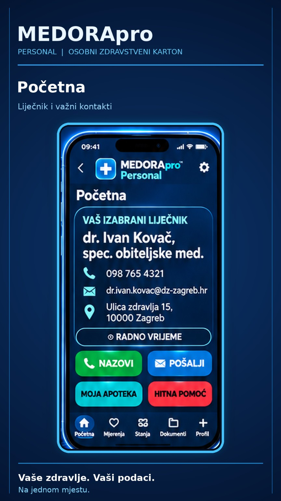
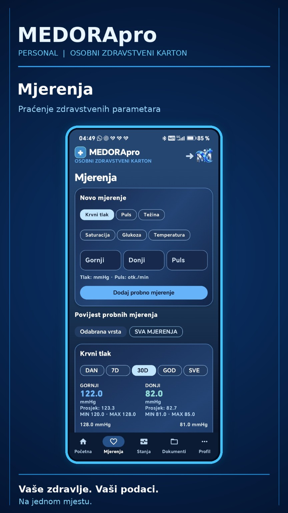
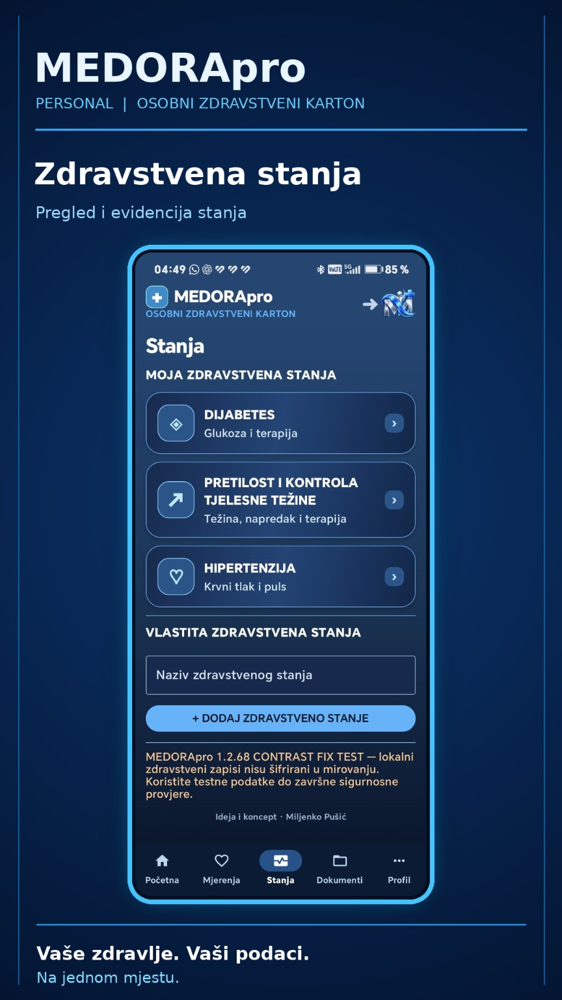
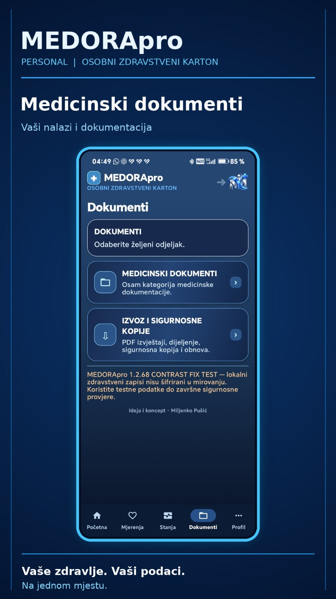
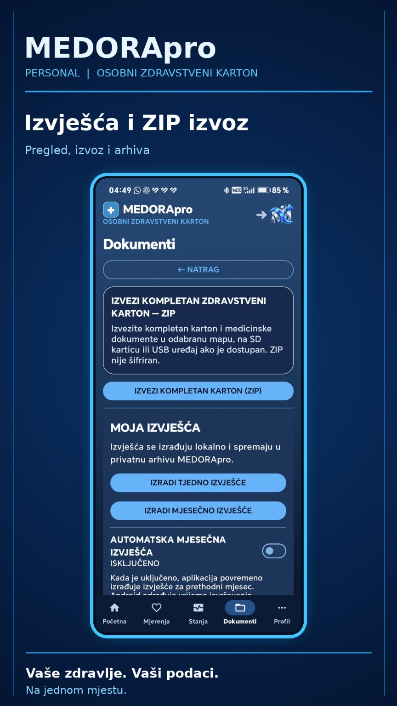
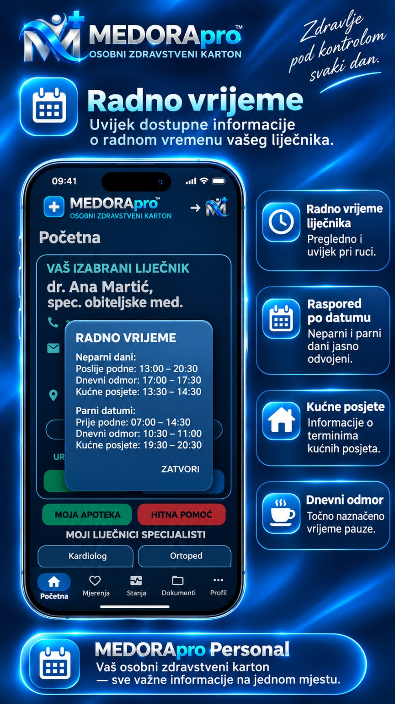
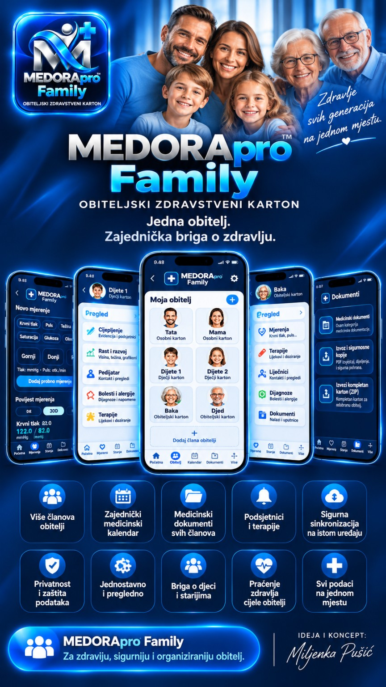

▤
Medicinski dokumenti
Nalazi, uputnice i dokumentacija organizirani u kategorije, mape i podmape.
Zdravstvena stanja, nalazi, terapije, mjerenja i važni pregledi — pregledno organizirani u jednom osobnom zdravstvenom kartonu.
MEDORApro 1.2.70 TEST · Razvoj i sigurnosno testiranje u tijeku · Još nije za javnu uporabu.
PROMOTIVNI VIDEO
Pogledajte naš originalni promotivni video.
PREGLED FUNKCIJA
Zamišljena za jasnu organizaciju vaših osobnih zdravstvenih informacija, bez nepotrebne složenosti.
Nalazi, uputnice i dokumentacija organizirani u kategorije, mape i podmape.
Pregled mjerenja, tlaka, glukoze, tjelesne težine i zdravstvenih stanja.
Evidencija lijekova i lokalni podsjetnici za važne termine terapije.
Pregledi, kontrole i planirani termini na jednom mjestu.
Izvoz izvješća i zasebne lozinkom šifrirane sigurnosne kopije.
Odabrani liječnik, specijalisti, ljekarna i brojevi hitne pomoći.
Pregled funkcija i mogućnosti aplikacije.






VAŠI PODACI, VAŠA ODLUKA
MEDORApro je osmišljen kao lokalni osobni zdravstveni karton bez obvezne pohrane u oblaku. Sami odlučujete kada ćete izvesti ili podijeliti svoje informacije.
Lokalno pohranjivanje. Kontrola izvoza. Privatnost kao cilj dizajna.

POGLED U BUDUĆNOST
Koncept budućeg proizvoda · nije dostupno
Zasebna ideja obiteljskog zdravstvenog kartona. Prikazana ilustracija služi kao vizija budućeg razvoja i ne predstavlja dostupnu funkcionalnu aplikaciju.
PROMOTIVNA AKCIJA
Najava akcije. Uvjeti i početak prijava bit će objavljeni na ovoj stranici nakon potvrde.
Prijave za akciju trenutačno nisu otvorene.
MEDORApro Personal trenutno prolazi razvoj i testiranje. Objavu na Google Playu najavit ćemo ovdje nakon završetka provjera.
MEDORApro nije zamjena za liječnika, medicinsku dijagnozu ili hitnu službu.